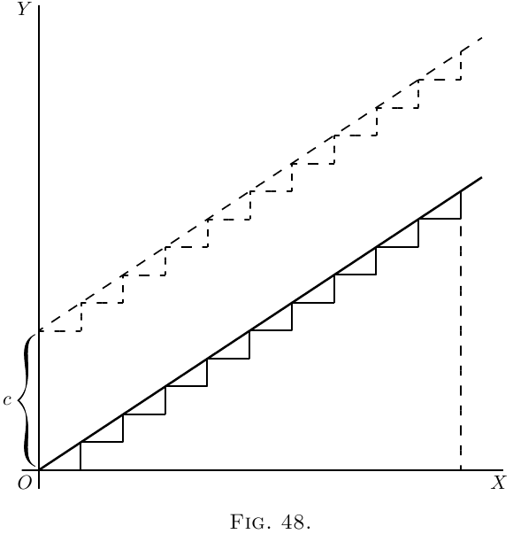

曲线的斜率，以及曲线本身。
我们先对曲线的斜率作一点预备考察。我们已经看到， 对一条曲线求导，就是求出表示它的斜率的式子 （或者表示它在不同点的斜率的式子）。如果斜率 （或者各点的斜率）已经给定，我们能不能反过来， 把整条曲线重建出来？
回到这里的例（2）。那里有最简单的一类曲线： 一条斜直线，它的方程是 \[ y = ax+b. \]
我们知道，这里的 $b$ 表示当 $x= 0$ 时 $y$ 的初始高度；
而 $a$，也就是 $\dfrac{dy}{dx}$，就是这条直线的“斜率”。
这条直线的斜率是常数。沿着整条线，所有的小三角形
的高度与底边的比例都相同。假设我们把 $dx$ 和 $dy$
看作有限大小，使得 $10$ 个 $dx$ 合成一英寸，那么就会有
十个这样的小三角形：
现在，假设有人只告诉我们 $\dfrac{dy}{dx} = a$，
要我们把这条“曲线”重建出来。我们能怎么办？
仍把这些小 $d$ 看作有限大小，我们可以画出 $10$ 个，
它们都有同样的斜率，然后把它们首尾相接，像这样：

而且，因为所有小段的斜率都相同，它们接起来就会形成
图 48 那样的斜直线，其斜率正是
$\dfrac{dy}{dx} = a$。无论我们把 $dy$ 和 $dx$ 看作有限小段
还是无限小量，既然它们全都一样，如果把 $y$ 记作所有
$dy$ 的总和，把 $x$ 记作所有 $dx$ 的总和，那么显然有
$\dfrac{y}{x} = a$。可是，这条斜直线应该放在哪里呢？
从原点 $O$ 出发，还是从更高处出发？我们掌握的信息只有斜率，
并没有任何关于它在 $O$ 上方具体高度的指示；事实上，
初始高度是不确定的。无论初始高度是多少，斜率都一样。
因此我们不妨猜一下可能需要什么，把这条斜直线放在
$O$ 上方高度为 $C$ 的地方开始。也就是说，我们得到方程
\[
y = ax + C.
\]
现在就很明显了：在这个例子里，那个加上的
常数表示当 $x = 0$ 时 $y$ 所具有的特定值。
现在来看一个难一点的情形：一条线，它的斜率不是常数，
而是越来越向上翘。我们假设随着 $x$ 增大，向上的斜率也
按比例越来越大。用符号表示就是：
\[
\frac{dy}{dx} = ax.
\]
或者，举一个具体例子，取 $a = \frac{1}{5}$，于是
\[
\frac{dy}{dx} = \tfrac{1}{5} x.
\]
那么最好先算出几个不同 $x$ 值下的斜率，并把它们画成小图。
当